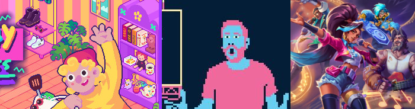

Welcome back!
I've played some more demos this past week while digging through Paranormasight: The Mermaid's Curse
(It's PEAK! And I know the guy from last post's name. It's Avi. He's strange and American, but it makes him slightly endearing)
Now onto the games!!!
First game I played was Thrifty Business! Already had high hopes as I've played this studio's previous game, Sticky Business and spent several cozy hours with it. For Thrifty Business it's going for the same cozy, stress-free shop management vibe except we're organizing our own thrift store and choosing what second hand stuff to place in our shop.
It's cute and I'm sooo hype about the events mechanic. Queer Date night here I come on! Whenever it drops.

I hope it drops soon!!!

Next I played Titanium Court. Such a cool way of recontextualizing a match-3 game and it's quirky setting really pulled me in
What really made my eyes widen was seeing AP Thomson's name near the start! I've just been seeing people bringing up this game on bluesky, but they didn't mention 'hey one of the people who worked on Consume Me is already putting a new game out'
(I actually first heard of him because a college friend had him as a professor when we were still in school LOL)I'm aware that he's also worked on Beglitched and everything clicked upon seeing the art style + visual gags. Favorite visual gag is when the war is over and the variety of stop images that shows. And the super dramatic ways it shows a building being destroyed.
But yeah. I don't think I wanna spoil things I think you should just play it. Right now.
Last but not least I played People of Note.
I...didn't quite like it as much. I think the more I've read and watched things the more harsher I've been. Honestly tho, I've been kind of 'movie averse' when I was younger because I would get easily frustrated by sexism or racism or what have you. Like I'm black and trans and queer and poor so I just am so critical of the cishetero white shit I gotta have in my face on the day to day. Well had to.
I think that's why I'm harsher. I don't like specifically playing or reading stuff that makes me roll my eyes too much. I think I can handle watching stuff and just viewing something to get a better understanding of things but-
Ok what I'm trying to say is the story through me for a loop! I already knew I wasn't gonna vibe as much with the game from the trailer because the lead single wasn't my thing at all. Which is fine! BUT ok so I would be fine if the demo wasn't set during like a battle between genres where Cadence (the protagonist) doesn't care to really help?
Like the game isn't bad! It's not my thing. The music is fine. I wish the rpg rhythm game bit had more feedback bc there's no clear metronome and it kinda irritated me. Like sure, I eventually got the rhythm but most rhythm games I like to feel like I have a grip after the first 20 minutes. The story also not my thing. I get that Cadence is going to (hopefully) go through a character arc where she'll be less selfish or whatever but man. I don't know.
I generally like games like this! No Straight Roads and Hi-Fi Rush are up there in some of my favorite rhythm games for how they combine a lot of concepts together to create a joyful experience. Like I LOVE those games. I want to like this game and maybe I will push myself to try again anyway when it comes out in April. Sheesh maybe I'll even watch someone play, but at the moment. It's not coming together for me. I like the songstones but the lack of rhythmic blocking, the lack of even items, and my general distaste from playing the demo just has me meh. Again, not a bad game! Not a buggy game! Just compared to the many other rhythm games with mixed genre stuff I'm not feeling this.
Final thought that finally bloomed from talking to my gf because I was like WHY don't I like it I feel so bad! And it's because there's musical cutscenes where you don't do gameplay and after having played rhythm games that combine their musical bits with the rhythm gameplay it makes me mad. Like. It barely feels like a rhythm game at all! At All!! I hope that changes but I played the demo and I not once had a headbopping in the zone rhythm game experience at all. That's why. Ok. I'm gonna stop ranting because I feel mean but I really didn't like it sorry!!